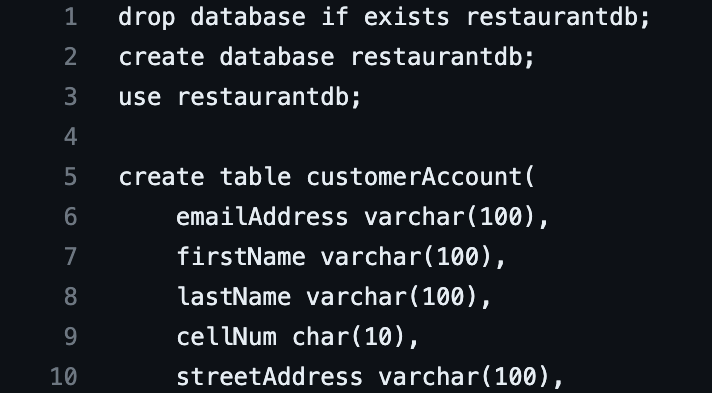

University Capstone Project
Independent research project on the content of a dark web cyber blackhat forum:
data analysis with Python and AI.
We were able to analyze over 9,000,000 forum posts to deeply understand the topics discussed by participants.
We isolated specific conversations to identify key contributors in the forum,
a development that can be used in to combat cyber attacks.
On our github you may find the .ipynb files that train the models.
Database Management Systems Restaurant Course Project

Completed a Database Management Systems course where I develop a full-fledged restaurant web application from scratch.
I began with creating an entity-relationship diagram, followed by building the equivalent database using mySQL,
and finally implemented the frontend using PHP,HTML, and CSS.
Personal Website
Developed and maintained a personal portfolio website that showcases technical skills and knowledge acquired in infrastructure,
highlighting work experiences, personal projects and a curated reading list.
The website is hosted on AWS, powered by NGINX on a Linux operating system and implemented with HTML and CSS. Implemented standard security including HTTP/2 support,
secure SSL certificates, and forced HTTPS redirection to ensure security.
{kind=link}
{kind=link}